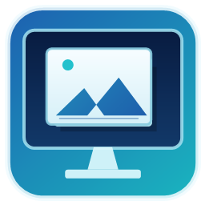
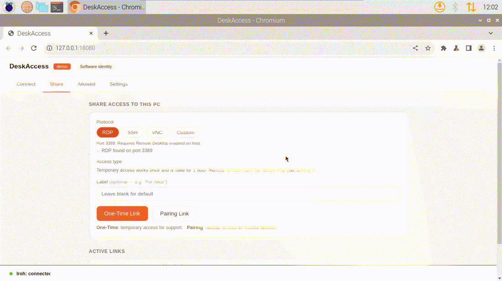

Selected services only
Share access to one service such as RDP, SSH, VNC, or a custom TCP port instead of exposing an entire subnet.

DeskAccessAn open-source, passwordless remote access alternative for RDP, SSH, VNC, and selected TCP services, using machine certificates and optional TPM-backed hardware identity without opening access to the whole private network.

Share access to one service such as RDP, SSH, VNC, or a custom TCP port instead of exposing an entire subnet.
Create temporary links or persistent paired access for trusted admin devices.
Designed for desktop support, home labs, Raspberry Pi access, and small office administration.
DeskAccess is built for people who want a narrower alternative to traditional VPNs and full remote desktop products. Instead of opening a whole network, it exposes only the selected service you invite or pair.
Use DeskAccess when you need access to one RDP, SSH, VNC, or TCP service rather than a full private subnet like many VPN-style tools provide.
DeskAccess can launch existing RDP and VNC clients through a secure tunnel, making it useful for workflows often handled by remote desktop tools.
The project is open source, and teams can run their own relay infrastructure when they want more control over availability and policy.
People comparing tools such as TeamViewer, AnyDesk, RustDesk, Chrome Remote Desktop, Tailscale, ZeroTier, or traditional VPNs may choose DeskAccess when service-scoped access is a better fit than broad device or network access.
DeskAccess uses passwordless authentication at the DeskAccess layer. During pairing and reconnect, endpoints prove machine identity with certificates instead of relying on a shared DeskAccess password.
RDP, SSH, VNC, and custom TCP data are carried over encrypted peer connections between DeskAccess endpoints.
Where supported, DeskAccess can bind machine identity to TPM-backed key material so trusted access is tied to the hardware device.
Pairing links establish trust between machines. Later connections authenticate with certificates, not a DeskAccess account password.
On systems without TPM support, DeskAccess can fall back to software identity while keeping the same certificate-based authentication model.
Relays and discovery systems can help connect peers, but they do not receive plaintext service traffic.